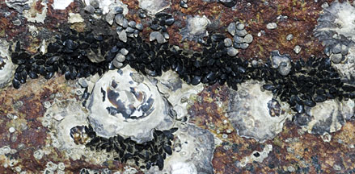
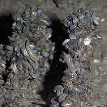
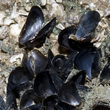
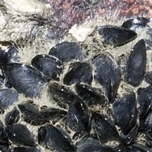
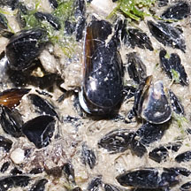

|
|
| bivalves text index | photo index |
| Phylum Mollusca > Class Bivalvia > Family Mytilidae |
| Little
black mussel Xenostrobus sp. Family Mytilidae updated May 2020 Where seen? This tiny black mussel is sometimes seen in clusters of many individuals on large boulders at the midwater mark. Grows among oysters, barnacles and other encrusting animals there. Dull greyish ones are sometimes seen in small clusters on mangrove trees and their roots in the mangroves. These may be Xenostrobus cf. atratus. Features: 1-2cm long. The two-part shell is shiny black, thin, fragile and smooth. Those growing on rocks produce byssus threads, sometimes these form a kind of nest in which the tiny mussels are embedded. But the 'nest' is not as thick and spongy as the mats created by Nest mussels. |
|
 Shiny black ones on a large boulder among oysters. Chek Jawa, Jan 08 |
 Greyish ones on mangrove roots Lim Chu Kang, Aug 05 |
|
 Pulau Sekudu, Jul 08 |
 Byssus threads form a kind of nest. Chek Jawa, Jan 08 |
 Pulau Ubin, Jan 10 |
| Little black mussels on Singapore shores |
On wildsingapore
flickr
|
| Other sightings on Singapore shores |
Links
References
|